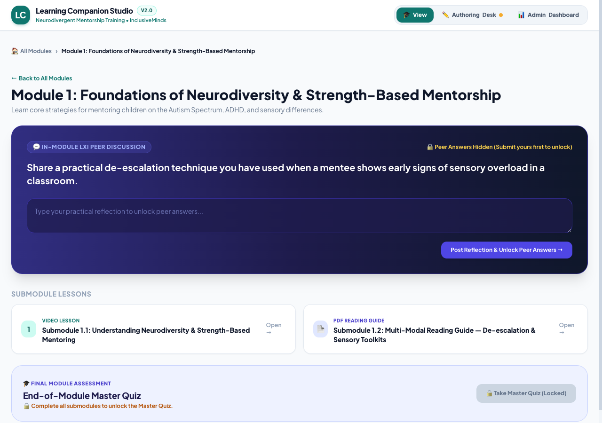
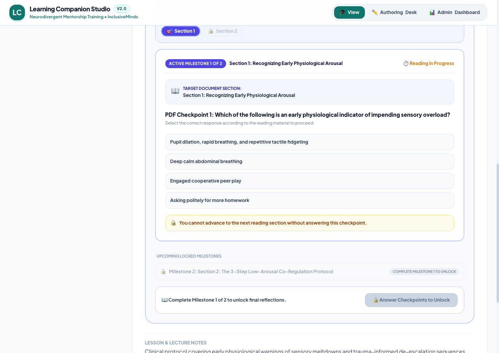
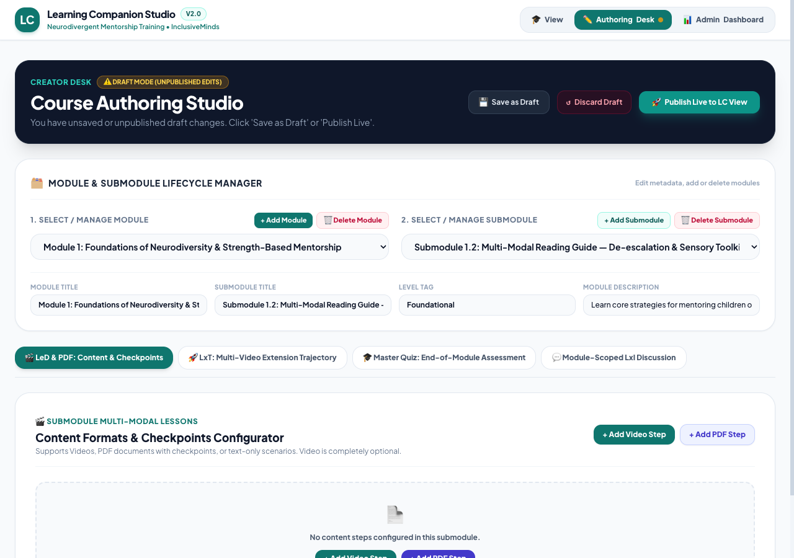

Learning Companion Studio is a simple, phone-friendly training space for volunteers, tutors, and parents who work with children with autism, ADHD, and sensory differences.
The educational problem
IMLC trains "Learning Companions" (volunteers and tutors) to sit alongside neurodivergent children. Most of their training today is long videos and dense PDFs, so it's easy to watch everything without really taking it in.
Companions can play a training video to the end without stopping to think about what it means for their mentee.
Long guides on de-escalation and sensory needs get skimmed, and the key steps are forgotten when they're needed.
Coordinators can't easily see who has understood the material and who needs another conversation before field work.
Target users
The children themselves don't use the app. It's for the adults around them.
Volunteers, tutors, and parents. Often short on time and learning on a phone between sessions. They need short steps and practical guidance, not theory.
IMLC's training team. They need to build and update lessons themselves, with no coding, and preview changes before companions see them.
Supervisors who decide when a companion is ready for field work. They need to see where each person struggled.
What the app does
The approach is based on the Learner-Centric MOOC (LCM) model: learn a little, apply it straight away, then reflect and discuss with peers.
A short video or a guide broken into small sections.
The video pauses at key moments with a real classroom question. You can't skip ahead.
Every answer explains why it's right or wrong, so mistakes become learning.
Write what you'd do, then see how other companions handled it. Finish with a final quiz.
Designed mobile-first for companions in the field.
The final quiz only opens once every video, reading, and question is complete.
Pick up where you left off, even after a spotty connection.
A quick look
Each module covers one topic, like strength-based mentoring or sensory overload, with video and reading lessons plus a peer discussion question.

Reading guides are split into short sections. Each one ends with a question you have to answer before the next section opens.

IMLC's team adds modules, videos, PDFs, and questions from a simple editor, saves drafts, and publishes when ready.

The team
Sign up as a Learning Companion to take a lesson, or use the author account to explore the editor and dashboard.
Author demo login: author@imlc.org / Author@IMLC2026